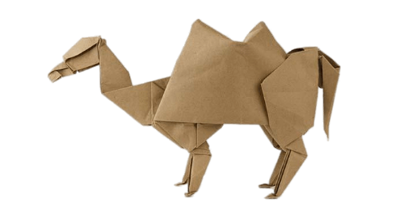
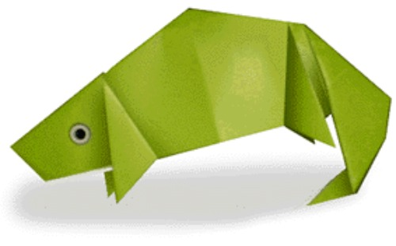
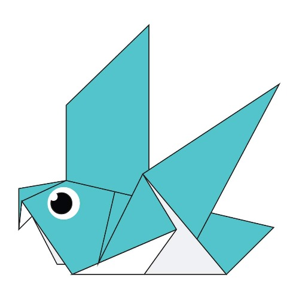
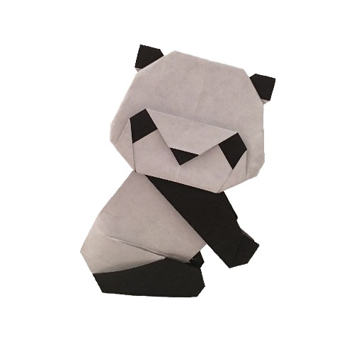

- Camel
- Chamelon
- Pigeon
- Teddy Bear
- Panda
- Flying Cicada
click here
1.There are two types of camels: One humped or “dromedary” camels and two humped Bactrian camels.
2.Camels have three sets of eyelids and two rows of eyelashes to keep sand out of their eyes.
3.Camels have thick lips which let them forage for thorny plants other animals can’t eat.
4.Camels can completely shut their nostrils during sandstorms.
5.Thanks to thick pads of skin on their chest and knees, camels can comfortably sit in very hot sand.
click here
1. CHAMELEONS VARY WILDLY IN TERMS OF SIZE.
2.THEY MAINLY CHANGE COLOR IN ORDER TO COMMUNICATE OR REGULATE BODY TEMPERATURE.
3.SKIN CRYSTALS ENABLE THEM TO CHANGE COLOR AT WILL.
4.UNLIKE MANY LIZARDS, CHAMELEONS CAN’T REGROW THEIR TAILS.
5.THEIR EYES CAN SWIVEL AROUND IN TWO DIFFERENT DIRECTIONS SIMULTANEOUSLY.
click here
1.THEY MIGHT BE THE FIRST DOMESTICATED BIRD.
2. THEY UNDERSTAND SPACE AND TIME.
3.THEY CAN FIND THEIR WAY BACK TO THE NEST FROM 1300 MILES AWAY.
4.YOU CAN TRAIN THEM TO BE ART SNOBS …
5. DODOS WERE RELATED TO TODAY'S PIGEONS.
click here
1.Bears eat mostly meat and fish, but some bears also eat plants and insects.
2.Canada is home to nearly 60 % of the world's polar bears.
3.The Asiatic black bear has the largest ears han other species of bears.
4.Black bears can run at the speed up to 35mph.
5.Baloo, from The Jungle Book, is a sloth bear.
click here
1. Giant pandas are good at climbing trees and can also swim.
2.Pandas have so many fans because they look cute.
3. Pandas are "lazy" — eating and sleeping make their day.
4.An adult can eat 12–38 kilos of bamboo per day!
5. You can see panda babies in August.
click here
1.They improve lawns by digging tunnels that allow air into the soil.
2.Females may be attracted to the sound of motors.
3.The loud whirring or buzzing sound you hear is an all-male cicada chorus.
4.Cicadas can survive a huge fall as babies.
5.They’re true bugs.